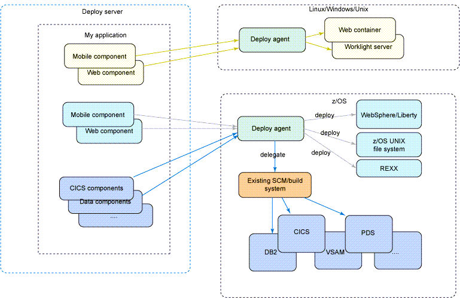

z/OS considerations for DevOps Deploy
IBM DevOps Deploy (Deploy) includes support for the z/OS platform. Although the articles in this Knowledge Center for using Deploy to deploy applications, certain platform-specific configuration factors must be considered when using a z/OS model.
An example of a standard enterprise application topology for the z/OS platform is shown. The z/OS components run on CICS with virtual storage access method (VSAM) for the data source. Some of the web and mobile components also run on z/OS using an application platform such as IBM WebSphere for z/OS. Some components run on distributed platforms.
Refer to the additional information for the z/OS platform.

These characteristics require the following considerations, as detailed in these areas of Deploy.